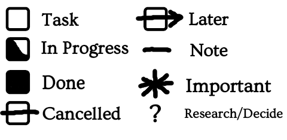

⚔️ THUNDERWARS: Personal Warfare Protocol
Threat Habit Unmasking and Neutralization by Direct Engagement and Rigorous Willpower Against Ruinous Systems
You Have Been Drafted.
Version 0.31.0
Source: https://github.com/EternityForest/THUNDERWARS License: CC-BY-SA-4.0 https://creativecommons.org/licenses/by-sa/4.0/
Begin by completing a BRANCH table, a FATIGUE DUTY chart, and a MESS HALL plan.
Choose one to three RITES OF WATCH
Then complete a DAGGER report for any zones within the BRANCH table identified as priority targets.
Maintain an INCIDENT LOG and GENERAL LOG.
Perform the DAWN BRIEFING and DUSK WATCH
Create Context Pages for frequently repeated tasks or significant plans.
Review all checklists and procedures carefully, every time; do not just rely on memory.
THUNDERWARS is a general-purpose framework for task, time, and mission management, designed to integrate the practical, psychological, and philosophical dimensions of getting things done, meant to feel like something your favorite characters from the world of fantasy and sci-fi might use.
It builds on some amount of science and precedent from aviation, medicine, cognitive science, and field operations, but is ultimately an everyday civillian tool, with no proven suitability for true critical operations.
While many productivity philosophies emphasize discipline over motivation, and for good reason, THUNDERWARS places its emphasis on prevention over endurance — designing habits, checklists, and decision frameworks to avoid unnecessary hardship, rather than to glorify perseverance under it.
This is not a program for toughness training, “becoming hard”, or oriented towards “warrior culture. Although the system borrows thematically from military, sci-fi, and high-fantasy traditions, these are metaphorical settings, chosen for their storytelling power and their ability to make self-management feel adventurous and creative, and are not intended to glorify violence.
One possible concern with this system, and any system that uses reminders or checklists for important things, is that if you don’t do the checklist, you might not even think of any of the things you have learned to associate with it, regardless of how important or obvious they are.
While the overall reliability rate is almost certainly going to increase with just about any system, they do create the possibility of forgetting a review or checklist and thus forgetting all the items at once, due to lack of experience remembering them in any other way aside from the reviews.
Computers execute instructions the same way every time. Change the code, and the machine obeys just as reliably as before.
The human brain does not work that way1. We forget. We make mistakes on tasks we’ve mastered. We may need weeks or months to learn or break a habit.
Checklists and procedures bridge this gap. They give us repeatability, making actions less dependent on memory or mood.
They give us controllability, allowing us to reconfigure our future behavior as just by writing a few words on a page.
They make experimentation possible: we can test a new method today, and if it works, preserve it for tomorrow.
They make new tasks approachable: what was once foreign becomes routine when we have a map to guide us.
And perhaps most importantly, they give us a contrast that reminds us of the limits.
When a problem resists procedure, when something about it seems bigger than words can capture, we recognize it as a signal to adapt, improvise, or rethink — instead of stumbling blindly into hazard.
The system depends on an unwavering review rhythm — at minimum Dawn, Dusk, and Weekly (SWORDPOINT) reviews.
These reviews cannot be skipped or replaced by ad-hoc checks, even if you’ve already reviewed the same material earlier in the day.
Redundancy is intentional — it builds reliability, strengthens habits, and prevents drift.
Additional reviews may be done at any time (and often should be), but they are supplementary, never substitutes.
Why: Consistency transforms the system from a collection of tools into an operational stance you can trust.
Borrowed from computer science — a document, reminder, or process is reachable if you can always get to it by starting from one of a small set of root procedures you already do, and can trust yourself to keep doing.
All important items must be explicitly linked to a “root” that you are confident you will review at the appropriate time, and they must be linked in a way that you are sure you will notice.
Roots include:
“Implementation Intentions” of the form “When X I will Y” are considered by some to be highly useful for replacing old habits and forming new ones, but they do not guarantee the level of reachability needed for critical tasks.
Use them, but also be aware that anyone can forget just about anything at any time, and take measures to keep track of what matters.
No critical item should ever “float” without a path from a root — otherwise it becomes unreachable and effectively lost.
Why: This ensures nothing important disappears into the cracks, no matter how chaotic life gets.
Most ordered steps are designed to get the most unpleasant task out of the way first, unless there is some specific reason to do things in some other order.
This seems to be a popular approach with some productivity experts2, and has the objective benefit of giving you an obvious, repeatable method for choosing what order to do tasks in, which can sometimes be more stressful than actually doing the chores.
It is easy to become complacent ehen checklists include large numbers of things to passively check, that only rarely require action.
For this reason, arbitrary tasks are sometimes inserted, purely or mostly to ensure that some minimal action is always taken to maintain presence snd engagement.
Nothing important should exist entirely in your head. Document things immediately when you think of them, so they are not forgotten.
If something does not have an obvious place it should go, and can be expressed in a few words, put it in the GENERAL LOG.
Use shorthand, partial sentences, bullet points, etc, to reduce the friction of the initial capture step- you can journal further later.
If something will take less than 2 minutes, just do it instead of recording it, unless there are multiple such things on your mind at once, then record them to avoid forgetting them.
A context page3 contains checklist items and notes that should be referred to when doing a certain action or at a certain time. We call them pages rather than lists, because in this system they are more than just task lists.
They can be used for recurring events, or for the planning leading up to one-time events.
They should usually be kept in the place where they will be used.
Frequently forgotten tasks should be added to the relevant CONTEXT page, even if it seems like you “should be able to remember them”.
CONTEXT pages may also be a great place for motivational quotes, remembering that motivation is not a substitute for discipline.
Be Specific & Actionable: Write tasks as concrete actions, not vague goals.
Bad: “Work on storage room”
Good: “Clear top shelf of storage room”
If a task can be done now (under 2 minutes), do it immediately rather than writing it down.
Keep entries brief (one short line). More detail can go in in the context section if needed.
Many tasks do not need to be done until another task is done or a specific event occurs. While it is often beneficial to do tasks in advance, knowing what must be done immediately is still important.
When a task does not become relevant until a specific event happens, note it with a b., indicating “Blocks” or Before.
If you need ink to print a flyer, you might note the task as “Design Flyer b. ink”
It would likely be preferable to complete the task before the blocker, so you have the option of getting started on the next step immediately.
This is not the same as adding a deadline to a task, because it does not denote when the task needs to be done- it only indicates that the next step can’t start until the blocker is resolved.
It is also not the same as a start time. Nothing prevents you from completing the task now, but it might not create value until the blocker is resolved.
Tasks to be started within 24–48 hours can go in the General Log where they will be seen, at minimum, at dawn and dusk reviews.
Tasks tied to a date, time, event, or location.
Non-critical, long-term, or “maybe” items can be moved to a separate list.
For any task you suspect you might delay or avoid:
Write a Reason Statement — a short note explaining why this matters or the consequences of ignoring it.
Example:
Task: Replace worn boot laces
Reason: Prevents tripping at work — safety issue
Reason Statements are brief but emotional, linking the task to consequences or values, which has been shown in studies to increase success, and provide a starting point to understand the context.
For certain tasks, replace the full completion goal with a time-limited session4 (e.g., “Spend 10 minutes on the bathroom”).
Use this especially when:
Battlefield Reconnaissance and Necessary Changes to Habits.
This is a unified chart of everything that’s going on in the medium term, good or bad, that is bigger than just a simple to-do list entry. It can contain big things, or smaller things, if you are attempting to analyze and reveal interconnectedness in a complex situation with many pieces.
If using paper, this system seems to work much better with sticky notes or cards rather than just writing on paper. If handwriting, the title or name of every entry should be underlined or otherwise highlighted; without some kind of structure, it can become confusing and hard to read.
Every entry should have:
BATTLE — Active, high-intensity problem or project.
CAMPAIGN — Planned multi-step initiative.
MYSTERY — Unknowns that need investigation, an active project primarily focused on a question.
DECREE — A policy or standing rule that you believe requires attention to integrate or maintain.
FRONTIER — New opportunity or expansion area.
ASSET — Resource to protect or maintain, that does not need major changes at the moment.
ALLIANCE — Relationship or collaboration.
For minimal friction, use abbreviations. 1d, 1w, 1m, 1y, etc, for days, weeks, months, years. Leave this blank if the time is unknown or ongoing.
Why this matters56 to the realm overall. How it connects to long-term stability or growth, or what might happen if you fail in this area.
The main obstacle or risk, not necessarily an “enemy strategy”, although it may be.
What are you going to do about this project? What could make the task easier? How will you stay motivated, and failing that, disciplined?
Can an Implementation Intention7(If X, I will Y) be used as part of your strategy?
Direct Action General Goal Elucidation Report
For long-term, difficult, or confusing tasks, record the answers to any relevant questions on this list.
For smaller projects, it may still be useful to review the list even if you do not decide to create a report.
If the mission relates to dismantling a THREAT HABIT, review these additional questions:
Is this habit typically paired with a beneficial activity that needs to be decoupled from the THREAT HABIT?
If so, does this habit need to be replaced with something else in that context?
Is this habit typically paired with another activity(snacking/scrolling, gambling/drinking, etc) that enhances it’s addictiveness?
What specific activities will you avoid combining?
For specific, focused missions like preparing for an important meeting, use the additional FIELD OPS questions:
These four steps can be used any time you switch tasks, to avoid losing critical information, and prevent the previous task from distracting your mind.
Say them in order. Write them only when needed. The goal is clarity, not documentation. Unlike almost all practices in this system, the WIND process is explicitly meant to be done from memory if possible.
Identify exactly where you left off and where you will pick back up. One sentence: “Next step is to attach the adapter cable.”
Recall what you were doing or planning before starting this task.
This prevents losing the previous thread and builds the habit of recovery from interruptions.
State one thing you learned or one insight you gained.
Decide what’s next outside this project once you stand up.
This restores momentum for the rest of the day.
(For reviewing missions, projects, and major events — victories or defeats)
Debrief reports may be done in a digital note, on the CONTEXT page used to plan the project, or in the GENERAL LOG, and important things may be recorded in a BOOK OF LESSONS.
(for quick wins or smaller events)
(for major undertakings or failures worth deep study)
Stabilize, Orient, Regain, Target, Initiate, Endure
For unforeseen problems, psychological ambushes, or emotional overwhelm.
For each regular and recurring task that must be performed, list:
Critical and time-sensitive tasks should be tracked with an automatically repeating electronic reminder.
List any self-care practices you intend to perform regularly as needed.
Record: * Items that need to be purchased in the near future * Items in need of repairs or unscheduled maintenance not listed in FATIGUE DUTY. * Items or empty spaces that are notably currently not being used or that you intend to do something with
Record successful or unsuccessful completion of missions and all notable changing conditions, along with notes from the DAWN BRIEFING and DUSK WATCH
“Every blade I have drawn in folly, I sheath with care; every wound I have given, I seek to mend.”
The INCIDENT LOG exists to make mistakes a moment of learning and repair instead of shame or avoidance. The point is ownership and right-action, not punishment.
Process:
When you realize you’ve failed to act in accordance with your values, goals, or standing orders, note it immediately in your Incident Log.
Who or what was affected, or could have been?Include both practical and moral impacts.
Avoid the “non-apology” trap — focus on your action, not how people reacted, or how “everything was fine in the end”.
If real harm was done, create a plan to make it right where you can. If you can’t repair, make a compensating action that still upholds your values.
Identify what tactical or strategic lapse caused it.
If a recurring problem is identified, it might go into your “Banned Tactics”, or a refinement of your “Standing Orders.”
Identify and record:
This document, which may be paper, or potentially digital, as it involves long-form, long-term content, is used to log what you have learned from previous successes and failures.
It is separate from the incident log and contains only events, both positive and negative, that you believe have taught lasting and important lessons.
It can contain debriefing notes from large projects, or things as simple as internet “life hacks” you believe you will actually use.
If paper is used, it might be best to use a separate notebook for this.
Entries should include:
You Have Been Drafted
Conduct this review around breakfast or before you begin your day’s first duties.
Your DAWN BRIEFING NOTES should be entered into the GENERAL LOG.
Standby…. Ready….. GO!
For the duration of the day’s mission, you should remember:
Conduct this after most work is done, but at least two hours before you disengage from the day. This is your final command meeting.
All posts accounted for. Patrols stood down. Perimeter secure.
In keeping with Do The Hardest Thing First12, we start with the physical sweeps, things that are likely to involve deciphering handwriting, and things that may be tedious due to length.
Another advantage is that the sweep can be done from memory(and then confirmed once you actually start the checklist!) without even picking up a book or phone, leaving hands free to do any ten second taks a discovered.
We want to keep recording intentions last, to avoid unnecessary akwardness with picking up and putting down pens.
This also allows one to immediately get started on things as soon as they write them down.
Due to the peak-end rule13, we expect a better perceived experience if easier or more pleasant things are kept near the end.
These actions introduce controlled friction, novelty, and continuity at points where human attention predictably fails.
They exist not to accomplish work, but to maintain awareness, discipline, and continuity across time transitions.
They are intentionally small, observable, and partly arbitrary. They must not directly accomplish or optimize anything, but they may be connected to something you wish to become more aware of or notice more.
Your ritual set must include at least one action from each class, and should ideally contain three or four items.
Purpose: Prevent autopilot, force presence
Rule: * Must vary day to day * Must always involve doing something (not checking) * Done at DAWN BRIEFING or DUSK WATCH
Examples:
This action confirms that you are awake, not just compliant.
Purpose: Build tolerance for repetition and boredom
Rule: * Must be the same every time * Must never be optimized or skipped * Should feel slightly redundant
Examples:
This action confirms you can maintain order even when nothing is new.
Purpose: Reveal fatigue, resistance, or drift
Rule: * Chosen deliberately * May rotate weekly or seasonally
Examples: * Brief posture check or stretch * One slow breath cycle * One line written by hand * Aligning a small object precisely * Standing still for ten seconds * If this action feels unusually difficult, that information matters
Actions may be swapped, but:
Forgetting an action is not a moral failure It is a diagnostic signal
If a rite is missed:
Strategic Weekly Overview, Debriefing, Planning, and Operational INTelligence
A high-command strategy debrief for the week’s campaign. Probably best done on Saturday or Sunday.
Remember that You Have Been Drafted. Ignoring important missions is likely not a good option.
This is a process used to think through a plan with as few hand-wavy gaps as possible.
It can also be used to deeply document something that has already happened.
Use for any high-stakes action (tech demo, field repair, client delivery, camping trip). Start with the Quick Pass and escalate only as needed.
Write down every known step of what will happen, or what should happen.
For every step, identify what happened or will happen in the gap before and after, between the documented steps.
For each step, record:
Who/what performs the action? (person, role, service)
What things are used or acted upon? (laptop, cable, credential, fuel)
What specific property must hold for the interaction to work? (port type, charge level, software version, key access, permissions)
Most objects and subjects have some kind of implicit property that is rarely directly analyzed, such as the expectation that food products should remain free of contamination, or that vehicles are properly maintained, or that people will be rested, fed, and present at the appropriate time.
Explicitly listing these brings them under conscious analysis, rather than leaving them to chance.
Repeat steps 2 and 3 as needed.
Keep drilling until every property is explicit, and there are no obvious gaps or missing time in the analysis.
Imagine the mission failed spectacularly. Write a short paragraph: How and why did it fail?
What single point of failure exists? What small oversight would take this down? Who benefits from this failing?
Examine every step and record the most likely cause of failure.
The warrior must watch out for the Chronophage, lest the sands of time slip away too fast.
A variety of neuroscience-related effects can quite literally steal your (perceived) time, and almost everyone seems to report being affected by it, claiming that time appears to “speed up” as they age.
Seek new experiences deliberately, even small ones: take a new route home, try new foods, change workspace layout.
Even minor variations create more “time stamps” in memory, stretching subjective time.
Practices like mindfulness meditation increase present-moment awareness, which research shows can expand subjective time perception.
The “quiet eye” training is a cousin to this — it enhances attentional control.
Journaling or daily reflection strengthens memory encoding. This makes days feel fuller in hindsight, which counteracts the blur of routine.
Photography or sketching also works — anything that forces you to notice and record details.
Alternating between fast, intense activity (a run, a timed drill) and slow, deliberate activity (slow cooking, meditation, longhand writing) can recalibrate the brain’s “internal metronome.”
Neuroscience shows that interoceptive signals (heartbeat, breath) affect time perception. Practices that make you feel your body rhythm can slow perceived time flow.
Emotional intensity, both positive and negative, slows time perception during the event (though memory can distort it later).
Cultivating awe is one of the strongest, most reliably studied “time-slowing” states.
The Destreze and an old Spanish system of swordsmanship and philosophy, centering on the work of Jerónimo Sánchez de Carranza and his student.
Much like Eastern martial arts, the system seems to be full of valuable insights that carry over outside of combat.
One defining aspect of the system is visualizing imaginary circles encompassing the full reach of a sword, giving an instant picture of where someone can attack without adjusting their stance.
This is very useful in the literal sense, as a fast way to approximately analyze how something could possibly move.
This could be valuable for preventing accidents by keeping things that should not touch, like saw blades and fingers, from having unnecessary overlapping reaches.
It is also valuable for analyzing any other situation that can be plotted along multiple axis.
We can imagine a radius of effect for a problem, which only affects us if we are close enough in multiple dimensions (Fatigue, proximity to temptation, stress, etc).
The Destreza, with it’s focused on minimal and efficient movement, reminds us to consider what specific things are bringing us closer to success or failure, and focus on those, rather than on flashy actions that do little to change the geometry that matters.
If you are on a boat in a poisonous lake, fire hazards are unlikely to be your primary concern.
You should probably leave before you are poisoned, rather than turning off your engine to avoid a non-existent problem.
If you are going to a fancy restaurant, you should not spend time packing a lunch in case they are out of food, and then forget to get dressed in the process.
Destreza distinguishes between “Natural” and “Forced” motion, which can be interpreted both literally and symbolically.
While the system was originally a martial art, we see everyday examples of movement that seems to set one up for failure and requires active force to control.
Movement without inherent safety or stability shows up in things like cutting a box towards yourself and risking injury if it slips, carrying something in such a way that you cannot easily put it down if needed, or turning a wrench that gives way suddenly and makes you slam your hand.
These exercises can be done at any time. It is likely beneficial to randomize them occasionally, because of the effects of novelty on time perception 16.
Practice: deliberately choose 1–2 small discomforts daily (cold rinse, finishing a boring chore, delaying a craving).
Benefit: builds tolerance to stress, inoculates against overload and avoidance.
Whenever you notice a potential problem of any kind, try to think of one more potential problem you haven’t noticed. The period just after mitigating the first one is dangerous, because it is easy to forget that other, less obvious problems exist.
Practice by thinking of some recent problems you have noticed, and finding a matching paired issue in the same situation, ideally in a completely different category.
If you found an empty soap dispenser, could anything else about the dispenser be an issue? If a stack of papers by the heater is a fire hazard, is there something in those papers you forgot?
Whenever you are interrupted for any reason, always ask what happened and what you were doing before you were interrupted.
Practice by choosing three events and identifying what happened before them.
Quiet Eye17 training is used in many seemingly unrelated fields, from sports to healthcare and law enforcement.
The warrior anchors their mind, and does not turn away from the fearsome sight
Practice: hold eyes steady on a single point (dot, mark, flame).
Purpose: lengthens focus, reduces wandering attention.
Practice: follow a moving object smoothly (pendulum, thrown ball, person walking).
Purpose: improves hand–eye coordination and predictive timing.
Analogy: shadowing an enemy’s blade, or a hawk tracking prey.
The archer makes sure of his aim before he fires
Practice: pause to fix your gaze on the critical spot before moving (foot placement before stepping, handle before grasping, text before writing).
Purpose: strengthens decision–action coupling; reduces clumsy errors.
The ranger knows the changing conditions of battle
Practice: soften your focus and notice the whole scene — awareness of motion, shapes, colors at the edge of vision.
Purpose: prevents tunnel vision; increases situational awareness.
The good scout finds what is hidden and examines it closely
Practice: deliberately switch between tight focus, as in Tracking or Fixed Gaze, and wide awareness.
Purpose: agility of attention; flexible mind under pressure.
Polychronic Training for Monochronic Minds
Setup: Block 30–60 minutes in your planner, but label it only as “flex time”.
Rule: You cannot pre-plan it. When you reach it, you must choose what to do on the spot, avoiding any RUINOUS SYSTEM habits and unenjoyable “counterfeit leisure”.
Difficulty upgrade: Roll a die or flip a coin to decide whether you use it for rest, socializing, or a small useful task.
Setup: Pick a small project, like drawing a picture, with low stakes and low potential material waste, but forbid yourself from having all the details in advance or doing any research before physically starting.
Rule: Start anyway, filling in missing pieces as you go.
Goal: Reduce paralysis when plans aren’t fully clear.
Setup: Choose a non-critical task to schedule not by the clock, but by events (e.g., “after I eat,” “before the sun sets,” “once I’ve spoken to X”).
Note that this type of plan does not count as “reachability”, at least not consistently for all people, and should not be intentionally relied on for anything critical.
Rule: No exact times allowed, only relationships.
Goal: Loosen dependence on clock precision and learn to feel time in a more organic rhythm.
Once per week, deliberately try something you’ve never done: a new food, route, micro-skill, or environment. Small is fine — the brain flags it as special.18
One block of time (20–30 minutes) with full sensory awareness: a walk with no phone, or a “slow meal” noticing taste, smell, texture.
Research19 shows mindfulness alters time perception, stretching the present moment.
Instead of just logging outcomes, describe sensory details, small surprises, and feelings. 20
Amabile’s “small wins” combine here: anchoring memories in concrete richness makes weeks feel longer and more meaningful.
Once a week, consciously place yourself 5 years back and 5 years forward: what’s different, what’s constant?
This engages autobiographical memory and future prospection, expanding felt temporal scope.
Watch a night sky, hear music that gives goosebumps, visit a tall building, read cosmic scale writing. 21
Artist’s Drills for Steady Hand and Focused Mind
“A sword is sharpened by repetition, not rage. A line is straightened by patience, not perfection.” — Old proverb from the Monastery of Quiet Ink
Draw a grid of lines across a page — slowly, evenly, without ruler or haste,
Strive for even spacing and consistent pressure.
Draw a set of lines, and then extend them, trying to make them look like continuous lines with no separate parts.
Place small objects — screws, coins, scraps — in perfect rows and columns by eye. Adjust until every item “feels” aligned.
Create a grid of evenly spaced dots on paper in the same way.
Choose a repetitive motion (cutting, sanding, stitching, typing). Perform it 100 times with unbroken rhythm and even pressure.
Keep a pencil moving purposefully for a full minute without pause, creating a pattern of your choosing.
The “standard” form of paper version of this system uses Personal size pages, commonly (and incorrectly) known as A6.
Preferably the Sakura Sumogrip or similar. 0.9 is chosen because it is much more durable and reliable than 0.5 or 0.7, and is now widely available.
These smaller notes are perfect for things like the BRANCH table, which may change regularly, and can also be used to attach reminders to objects, although for many people this should not be relied as they may go unnoticed.
This is important for keeping track of your sticky notes. Often included with planner kits. Be sure to have a large one that actually fits the sticky notes; the 3-section card holders don’t.
For quick access to the current time in the GENERAL LOG, these are often included with planner kits.
There should be 5 tabs:
Use a bookmark to quickly jump to a specific day. Those who mostly use digital media can use this for short bullet point upgrades, and keep a separate digital DIARY for longer discussion.
This section deals with monitoring the state of ongoing projects.
Keep the BRANCH table at the front, and add any DAGGER reports after.
Keep CONTEXT PAGES here unless they have somewhere else specific to be.
This section deals with normal everyday life and routine tasks not otherwise associated with a specific mission.
For any random nonstandard notes
This gets its own section in the back, for quick access without imposing too much unpleasantness.

To aid in prioritizing projects and goals, consider your thoughts on these matters, keeping in mind that you may have to discover them over time, and taking care not to lock yourself into an unhealthy self-image.
“These are the banners I ride beneath; I raise them high so I may see them clearly in the dust of battle.”
Your moral compass, virtues you fight for
“I hold these favored arts in trust, knowing they have served me well in times past. Yet I remain mindful that even the surest hand may falter. Thus I pledge to wield my strengths with care, lest they endanger those I am sworn to protect.”
Your “Core Competencies”, bearing ever in mind that they may change.
“When the horns sound and the fog of battle covers all, still the golden path shines clear.”
Non-negotiable rules you always follow
What “winning” in life means to you.
“Some weapons I leave to rust”
Things you refuse to do, even if they might “work”
You may want to create a separate page to list any larger threats that may be working in the background, as common factors driving multiple seemingly unrelated THREAT HABITS.
Use the THREAT ASSESSMENT QUESTIONS to analyze each one:
One possible template for those primarily using digital media.
Use electronic tools for time-sensitive alerts, recurring events, and deadline tracking.
Electronic is faster for typing, editing, and reorganizing complex thoughts.
Keep essential reference data in your phone/tablet unless a notebook is already in play for the day.
Digital storage allows encryption or password protection, deterring casual snooping.
Digital data can be easily preserved, making it convenient for things like ideas/maybe lists.
Quick jot notes, numbers, or sketches that lose relevance after hours/days.
Paper removes digital distractions and encourages nonlinear thinking.
Physically writing something requires more effort; do the harder thing first if both paper and digital copies are needed.
Data you may need without load times (maps, quick reference tables, visual mnemonics, simple daily todos)
When a page is no longer active but may still be referenced soon (e.g. last week’s BRANCH, recent gear logs, completed DAGGERs), move it to the rear of your FIELD BOOK, after your spare blank pages. This keeps it accessible, but out of your working tabs.
When pages are fully complete or unlikely to be used again soon, transfer them to your archive box or binder back at base. File by section or date for long-term reflection, incident tracking, or post-mission analysis.
“Leave no thought behind. Every battle fought teaches the next one.”
Excessive quantities of objects can consume large amounts of time and effort, sometimes starting before the item is even purchased!
Military principle: Every piece of gear must justify its weight by its direct connection to the mission.
Practice: Soldiers don’t just carry “what might be useful.” They’re trained to constantly evaluate whether an item supports the immediate mission, the environment, and the duration of action.
Soldiers are told: “Ounces make pounds, and pounds make pain.”
Always pick up your loadout, put it on, and walk around before committing.
If you wouldn’t want to sprint or climb with what you plan to carry, or if you dread loading and unloading it all, something has to go.
Both militaries and first responders use layers when out in the field.
Absolute essentials (knife, water, ID, comms, light, etc). Must never leave your person.
Mission gear you might drop temporarily, but would recover soon. This is the gear that is actively in use, or extremely likely to be used soon, such as the tools in a tool belt.
Civilians in non-emergency situations almost always have an additional “fourth layer” of things that can be readily bought, borrowed, run home for, or otherwise found easily. This concept does not appear to be discussed in survival circles, but it is a key difference between everyday life and tactical situations.
Many non-critical items are much less important than they seem to be.
For every item, determine what layer it belongs in, and how it should be securely carried.
After every op, soldiers do a “lessons learned” session: what was never touched? What saved the day? What broke?
During your debriefings, pay special attention to items that are consistently unused.
Units often use a baseline packing list (everyone carries X, Y, Z).
Civilian adaptation: Have a master list for camping, travel, work — but trim ruthlessly before each trip.
Add any regular maintenance to a repeating calendar event, or to a CONTEXT page you use regularly, possibly even the SWORDPOINT page.
The military acknowledges morale is part of survival. A letter, a photo, or one comfort item is often encouraged — but not an entire pile.
The official font is Ovo for body text, and Black Ops One for headings.
Headings level 1 and 2 should be centered, and all lower-level headings should be right-aligned.
This project uses SemVer for version numbering.
As this is not an academic paper, citations do not always follow standard practice for scientific writing. They are there to provide historical context and starting points for further research.